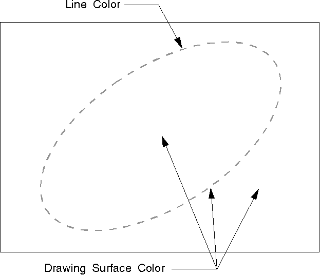

The color attribute defines the color used to draw a primitive or an object. The mix attribute determines how the color of a primitive or an object is combined with the color of the drawing surface, or any other objects on the surface.
The line color defines the color used to draw the output from any of the operating system's line functions. When a presentation space is created, the line color initial default is black. Unlike certain other primitives, the line and arc primitives do not have a background color. The current color of the drawing surface automatically plays a greater role in the appearance of line and arc primitives than in those primitives that do have a background color. Specifically, when an application draws a dotted or dashed line, the color that appears between the dots or dashes is the current drawing-surface color, as shown in the following figure.
Line and arc primitives have only a color attribute for the actual line. The mix attribute controls the combination of line color with drawing surface color.
Line and Arc Primitives
When a presentation space is created, the line mix attribute initial default is FM_OVERPAINT. The overpaint mix attribute specifies that the line color is not modified by the color of the drawing surface. If the line mix attribute is changed, the line color is mixed with colors that are already on the drawing surface.
To specify a new color or mix attribute use GpiSetAttrs. This function accepts as input the type of primitive, for example PRIM_LINE, a list of attributes that are to be changed, a list of attributes that are to be set to their default values, and the values for the attributes that are to be changed. GpiSetAttrs is useful for specifying colors and mix attributes just for a specific data structure (for example, the LINEBUNDLE structure). GpiSetAttrs also provides some protection against invalid colors.
To determine the current line color and mix attribute, use GpiQueryAttrs. This function accepts as input the primitive type and the attributes in question. It returns as output an array of values for the specifically queried attributes.
To reset the default line color and mix attribute, just as with any other attribute specified in the LINEBUNDLE data structure, use GpiSetDefAttrs. This function accepts as input the type of primitive, for example PRIM_LINE, the attributes to be changed, and the values that will become the new default values. The changing of default values is important when working with segments. Changing the default values during a series of drawing functions is not recommended.
The line color and mix attribute also can be specified with GpiSetColor and GpiSetMix, respectively. However, those two functions have the disadvantage of specifying the color and mix attribute for all primitive BUNDLE data structures that have a component for foreground color and foreground mix attribute. The queries, GpiQueryColor and GpiQueryMix, determine the color and mix attribute as specified by GpiSetColor and GpiSetMix. If the line color or mix attribute is specified individually, the aforementioned queries can return a value inconsistent with the current line color or mix attribute.